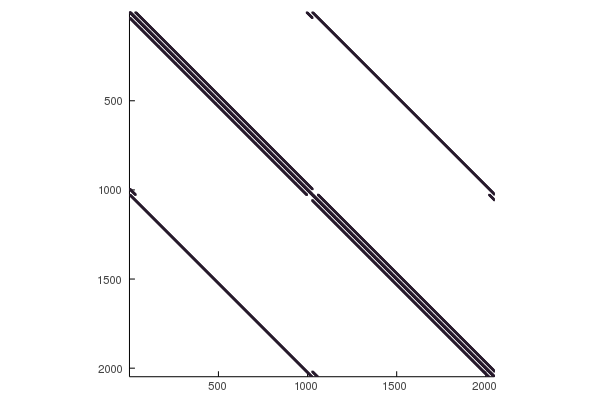

Solving Stiff Equations
This tutorial is for getting into the extra features for solving stiff ordinary differential equations in an efficient manner. Solving stiff ordinary differential equations requires specializing the linear solver on properties of the Jacobian in order to cut down on the $\mathcal{O}(n^3)$ linear solve and the $\mathcal{O}(n^2)$ back-solves. Note that these same functions and controls also extend to stiff SDEs, DDEs, DAEs, etc.
This tutorial is for advanced users to dive into advanced features!
Code Optimization for Differential Equations
Solving stiff differential equations requires speed. Here's a few things to keep in mind.
Writing Efficient Code
For a detailed tutorial on how to optimize one's DifferentialEquations.jl code, please see the Optimizing DiffEq Code tutorial.
Choosing a Good Solver
Choosing a good solver is required for getting top notch speed. General recommendations can be found on the solver page (for example, the ODE Solver Recommendations). The current recommendations can be simplified to a Rosenbrock method (Rosenbrock23 or Rodas5) for smaller (<50 ODEs) problems, ESDIRK methods for slightly larger (TRBDF2 or KenCarp4 for <2000 ODEs), and Sundials CVODE_BDF for even larger problems. lsoda from LSODA.jl is generally worth a try.
More details on the solver to choose can be found by benchmarking. See the DiffEqBenchmarks to compare many solvers on many problems.
Check Out the Speed FAQ
See this FAQ for information on common pitfalls and how to improve performance.
Setting Up Your Julia Installation for Speed
Julia uses an underlying BLAS implementation for its matrix multiplications and factorizations. This library is automatically multithreaded and accelerates the internal linear algebra of DifferentialEquations.jl. However, for optimality, you should make sure that the number of BLAS threads that you are using matches the number of physical cores and not the number of logical cores. See this issue for more details.
To check the number of BLAS threads, use:
ccall((:openblas_get_num_threads64_, Base.libblas_name), Cint, ())If I want to set this directly to 4 threads, I would use:
using LinearAlgebra
LinearAlgebra.BLAS.set_num_threads(4)Additionally, in some cases Intel's MKL might be a faster BLAS than the standard BLAS that ships with Julia (OpenBLAS). To switch your BLAS implementation, you can use MKL.jl which will accelerate the linear algebra routines. Please see the package for the limitations.
Use Accelerator Hardware
When possible, use GPUs. If your ODE system is small and you need to solve it with very many different parameters, see the ensembles interface and DiffEqGPU.jl. If your problem is large, consider using a CuArray for the state to allow for GPU-parallelism of the internal linear algebra.
Speeding Up Jacobian Calculations
When one is using an implicit or semi-implicit differential equation solver, the Jacobian must be built at many iterations and this can be one of the most expensive steps. There are two pieces that must be optimized in order to reach maximal efficiency when solving stiff equations: the sparsity pattern and the construction of the Jacobian. The construction is filling the matrix J with values, while the sparsity pattern is what J to use.
The sparsity pattern is given by a prototype matrix, the jac_prototype, which will be copied to be used as J. The default is for J to be a Matrix, i.e. a dense matrix. However, if you know the sparsity of your problem, then you can pass a different matrix type. For example, a SparseMatrixCSC will give a sparse matrix. Additionally, structured matrix types like Tridiagonal, BandedMatrix (from BandedMatrices.jl), BlockBandedMatrix (from BlockBandedMatrices.jl), and more can be given. DifferentialEquations.jl will internally use this matrix type, making the factorizations faster by utilizing the specialized forms.
For the construction, there are 3 ways to fill J:
- The default, which uses normal finite/automatic differentiation
- A function
jac(J,u,p,t)which directly computes the values ofJ - A
colorvecwhich defines a sparse differentiation scheme.
We will now showcase how to make use of this functionality with growing complexity.
Declaring Jacobian Functions
Let's solve the Rober equations:
In order to reduce the Jacobian construction cost, one can describe a Jacobian function by using the jac argument for the ODEFunction. First, let's do a standard ODEProblem:
using DifferentialEquations
function rober(du,u,p,t)
y₁,y₂,y₃ = u
k₁,k₂,k₃ = p
du[1] = -k₁*y₁+k₃*y₂*y₃
du[2] = k₁*y₁-k₂*y₂^2-k₃*y₂*y₃
du[3] = k₂*y₂^2
nothing
end
prob = ODEProblem(rober,[1.0,0.0,0.0],(0.0,1e5),[0.04,3e7,1e4])
sol = solve(prob)
plot(sol,tspan=(1e-2,1e5),xscale=:log10)
julia> using BenchmarkTools
julia> @btime solve(prob)
415.800 μs (3053 allocations: 161.64 KiB)Now we want to add the Jacobian. First we have to derive the Jacobian $\frac{df_i}{du_j}$ which is J[i,j]. From this we get:
function rober_jac(J,u,p,t)
y₁,y₂,y₃ = u
k₁,k₂,k₃ = p
J[1,1] = k₁ * -1
J[2,1] = k₁
J[3,1] = 0
J[1,2] = y₃ * k₃
J[2,2] = y₂ * k₂ * -2 + y₃ * k₃ * -1
J[3,2] = y₂ * 2 * k₂
J[1,3] = k₃ * y₂
J[2,3] = k₃ * y₂ * -1
J[3,3] = 0
nothing
end
f = ODEFunction(rober, jac=rober_jac)
prob_jac = ODEProblem(f,[1.0,0.0,0.0],(0.0,1e5),(0.04,3e7,1e4))julia> @btime solve(prob_jac)
305.400 μs (2599 allocations: 153.11 KiB)Automatic Derivation of Jacobian Functions
But that was hard! If you want to take the symbolic Jacobian of numerical code, we can make use of ModelingToolkit.jl to symbolicify the numerical code and do the symbolic calculation and return the Julia code for this.
using ModelingToolkit
de = modelingtoolkitize(prob)
ModelingToolkit.generate_jacobian(de)[2] # Second is in-placewhich outputs:
:((##MTIIPVar#376, u, p, t)->begin
#= C:\Users\accou\.julia\packages\ModelingToolkit\czHtj\src\utils.jl:65 =#
#= C:\Users\accou\.julia\packages\ModelingToolkit\czHtj\src\utils.jl:66 =#
let (x₁, x₂, x₃, α₁, α₂, α₃) = (u[1], u[2], u[3], p[1], p[2], p[3])
##MTIIPVar#376[1] = α₁ * -1
##MTIIPVar#376[2] = α₁
##MTIIPVar#376[3] = 0
##MTIIPVar#376[4] = x₃ * α₃
##MTIIPVar#376[5] = x₂ * α₂ * -2 + x₃ * α₃ * -1
##MTIIPVar#376[6] = x₂ * 2 * α₂
##MTIIPVar#376[7] = α₃ * x₂
##MTIIPVar#376[8] = α₃ * x₂ * -1
##MTIIPVar#376[9] = 0
end
#= C:\Users\accou\.julia\packages\ModelingToolkit\czHtj\src\utils.jl:67 =#
nothing
end)Now let's use that to give the analytical solution Jacobian:
jac = eval(ModelingToolkit.generate_jacobian(de)[2])
f = ODEFunction(rober, jac=jac)
prob_jac = ODEProblem(f,[1.0,0.0,0.0],(0.0,1e5),(0.04,3e7,1e4))Declaring a Sparse Jacobian
Jacobian sparsity is declared by the jac_prototype argument in the ODEFunction. Note that you should only do this if the sparsity is high, for example, 0.1% of the matrix is non-zeros, otherwise the overhead of sparse matrices can be higher than the gains from sparse differentiation!
But as a demonstration, let's build a sparse matrix for the Rober problem. We can do this by gathering the I and J pairs for the non-zero components, like:
I = [1,2,1,2,3,1,2]
J = [1,1,2,2,2,3,3]
using SparseArrays
jac_prototype = sparse(I,J,1.0)Now this is the sparse matrix prototype that we want to use in our solver, which we then pass like:
f = ODEFunction(rober, jac=jac, jac_prototype=jac_prototype)
prob_jac = ODEProblem(f,[1.0,0.0,0.0],(0.0,1e5),(0.04,3e7,1e4))Automatic Sparsity Detection
One of the useful companion tools for DifferentialEquations.jl is SparsityDetection.jl. This allows for automatic declaration of Jacobian sparsity types. To see this in action, let's look at the 2-dimensional Brusselator equation:
const N = 32
const xyd_brusselator = range(0,stop=1,length=N)
brusselator_f(x, y, t) = (((x-0.3)^2 + (y-0.6)^2) <= 0.1^2) * (t >= 1.1) * 5.
limit(a, N) = a == N+1 ? 1 : a == 0 ? N : a
function brusselator_2d_loop(du, u, p, t)
A, B, alpha, dx = p
alpha = alpha/dx^2
@inbounds for I in CartesianIndices((N, N))
i, j = Tuple(I)
x, y = xyd_brusselator[I[1]], xyd_brusselator[I[2]]
ip1, im1, jp1, jm1 = limit(i+1, N), limit(i-1, N), limit(j+1, N), limit(j-1, N)
du[i,j,1] = alpha*(u[im1,j,1] + u[ip1,j,1] + u[i,jp1,1] + u[i,jm1,1] - 4u[i,j,1]) +
B + u[i,j,1]^2*u[i,j,2] - (A + 1)*u[i,j,1] + brusselator_f(x, y, t)
du[i,j,2] = alpha*(u[im1,j,2] + u[ip1,j,2] + u[i,jp1,2] + u[i,jm1,2] - 4u[i,j,2]) +
A*u[i,j,1] - u[i,j,1]^2*u[i,j,2]
end
end
p = (3.4, 1., 10., step(xyd_brusselator))Given this setup, we can give and example input and output and call jacobian_sparsity on our function with the example arguments and it will kick out a sparse matrix with our pattern, that we can turn into our jac_prototype.
using SparsityDetection, SparseArrays
input = rand(32,32,2)
output = similar(input)
sparsity_pattern = jacobian_sparsity(brusselator_2d_loop,output,input,p,0.0)
jac_sparsity = Float64.(sparse(sparsity_pattern))Let's double check what our sparsity pattern looks like:
using Plots
spy(jac_sparsity,markersize=1,colorbar=false,color=:deep)
That's neat, and would be tedius to build by hand! Now we just pass it to the ODEFunction like as before:
f = ODEFunction(brusselator_2d_loop;jac_prototype=jac_sparsity)Build the ODEProblem:
function init_brusselator_2d(xyd)
N = length(xyd)
u = zeros(N, N, 2)
for I in CartesianIndices((N, N))
x = xyd[I[1]]
y = xyd[I[2]]
u[I,1] = 22*(y*(1-y))^(3/2)
u[I,2] = 27*(x*(1-x))^(3/2)
end
u
end
u0 = init_brusselator_2d(xyd_brusselator)
prob_ode_brusselator_2d = ODEProblem(brusselator_2d_loop,
u0,(0.,11.5),p)
prob_ode_brusselator_2d_sparse = ODEProblem(f,
u0,(0.,11.5),p)Now let's see how the version with sparsity compares to the version without:
@btime solve(prob_ode_brusselator_2d,save_everystep=false) # 51.714 s (7317 allocations: 70.12 MiB)
@btime solve(prob_ode_brusselator_2d_sparse,save_everystep=false) # 2.880 s (55533 allocations: 885.09 MiB)
@btime solve(prob_ode_brusselator_2d_sparse,TRBDF2(),save_everystep=false) # 1.185 s (55081 allocations: 347.79 MiB)From some automated tooling an a choice of an algorithm, we went from almost a minute to almost a second!
Defining Linear Solver Routines and Jacobian-Free Newton-Krylov
A completely different way to optimize the linear solvers for large sparse matrices is to use a Krylov subpsace method. This requires choosing a linear solver for changing to a Krylov method. Optionally, one can use a Jacobian-free operator to reduce the memory requirements.
Declaring a Jacobian-Free Newton-Krylov Implementation
To swap the linear solver out, we use the linsolve command and choose the GMRES linear solver.
@btime solve(prob_ode_brusselator_2d,TRBDF2(linsolve=LinSolveGMRES()),save_everystep=false) # 469.174 s (1266049 allocations: 120.80 MiB)
@btime solve(prob_ode_brusselator_2d_sparse,TRBDF2(linsolve=LinSolveGMRES()),save_everystep=false) 10.928 s (1327264 allocations: 59.92 MiB)For more information on linear solver choices, see the linear solver documentation.
We can also enhance this by using a Jacobian-Free implementation of f'(x)*v. To define the Jacobian-Free operator, we can use DiffEqOperators.jl to generate an operator JacVecOperator such that Jv*v performs f'(x)*v without building the Jacobian matrix.
using DiffEqOperators
Jv = JacVecOperator(brusselator_2d_loop,u0,p,0.0)and then we can use this by making it our jac_prototype:
f2 = ODEFunction(brusselator_2d_loop;jac_prototype=Jv);
prob_ode_brusselator_2d_jacfree = ODEProblem(f2,u0,(0.,11.5),p);
@btime solve(prob_ode_brusselator_2d_jacfree,TRBDF2(linsolve=LinSolveGMRES()),save_everystep=false) # 8.352 s (1875298 allocations: 78.86 MiB)Adding a Preconditioner
The linear solver documentation shows how you can add a preconditioner to the GMRES. For example, you can use packages like AlgebraicMultigrid.jl to add an algebraic multigrid (AMG) or IncompleteLU.jl for an incomplete LU-factorization (iLU).
using AlgebraicMultigrid
pc = aspreconditioner(ruge_stuben(jac_sparsity));
@btime solve(prob_ode_brusselator_2d_jacfree,TRBDF2(linsolve=LinSolveGMRES(Pl=pc)),save_everystep=false) # 5.247 s (233048 allocations: 139.27 MiB)Using Structured Matrix Types
If your sparsity pattern follows a specific structure, for example a banded matrix, then you can declare jac_prototype to be of that structure and then additional optimizations will come for free. Note that in this case, it is not necessary to provide a colorvec since the color vector will be analytically derived from the structure of the matrix.
The matrices which are allowed are those which satisfy the ArrayInterface.jl interface for automatically-colorable matrices. These include:
- Bidiagonal
- Tridiagonal
- SymTridiagonal
- BandedMatrix (BandedMatrices.jl)
- BlockBandedMatrix (BlockBandedMatrices.jl)
Matrices which do not satisfy this interface can still be used, but the matrix coloring will not be automatic, and an appropriate linear solver may need to be given (otherwise it will default to attempting an LU-decomposition).
Sundials-Specific Handling
While much of the setup makes the transition to using Sundials automatic, there are some differences between the pure Julia implementations and the Sundials implementations which must be taken note of. These are all detailed in the Sundials solver documentation, but here we will highlight the main details which one should make note of.
Defining a sparse matrix and a Jacobian for Sundials works just like any other package. The core difference is in the choice of the linear solver. With Sundials, the linear solver choice is done with a Symbol in the linear_solver from a preset list. Particular choices of note are :Band for a banded matrix and :GMRES for using GMRES. If you are using Sundials, :GMRES will not require defining the JacVecOperator, and instead will always make use of a Jacobian-Free Newton Krylov (with numerical differentiation). Thus on this problem we could do:
using Sundials
# Sparse Version
@btime solve(prob_ode_brusselator_2d_sparse,CVODE_BDF(),save_everystep=false) # 42.804 s (51388 allocations: 3.20 MiB)
# GMRES Version: Doesn't require any extra stuff!
@btime solve(prob_ode_brusselator_2d,CVODE_BDF(linear_solver=:GMRES),save_everystep=false) # 485.671 ms (61058 allocations: 3.63 MiB)Details for setting up a preconditioner with Sundials can be found at the Sundials solver page.
Handling Mass Matrices
Instead of just defining an ODE as $u' = f(u,p,t)$, it can be common to express the differential equation in the form with a mass matrix:
where $M$ is known as the mass matrix. Let's solve the Robertson equation. At the top we wrote this equation as:
But we can instead write this with a conservation relation:
In this form, we can write this as a mass matrix ODE where $M$ is singular (this is another form of a differential-algebraic equation (DAE)). Here, the last row of M is just zero. We can implement this form as:
using DifferentialEquations
function rober(du,u,p,t)
y₁,y₂,y₃ = u
k₁,k₂,k₃ = p
du[1] = -k₁*y₁ + k₃*y₂*y₃
du[2] = k₁*y₁ - k₃*y₂*y₃ - k₂*y₂^2
du[3] = y₁ + y₂ + y₃ - 1
nothing
end
M = [1. 0 0
0 1. 0
0 0 0]
f = ODEFunction(rober,mass_matrix=M)
prob_mm = ODEProblem(f,[1.0,0.0,0.0],(0.0,1e5),(0.04,3e7,1e4))
sol = solve(prob_mm,Rodas5(),reltol=1e-8,abstol=1e-8)
plot(sol, xscale=:log10, tspan=(1e-6, 1e5), layout=(3,1))
If your mass matrix is singular, i.e. your system is a DAE, then you need to make sure you choose a solver that is compatible with DAEs